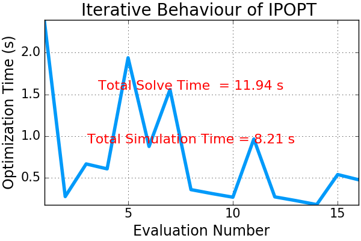
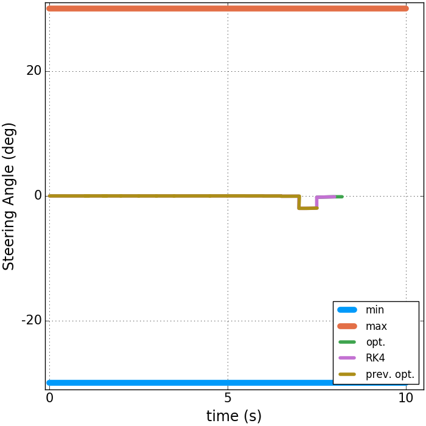
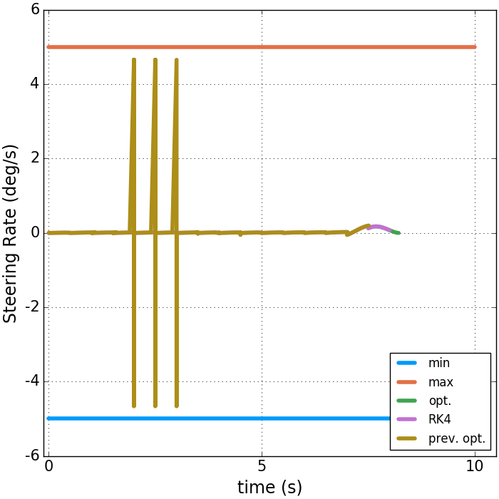
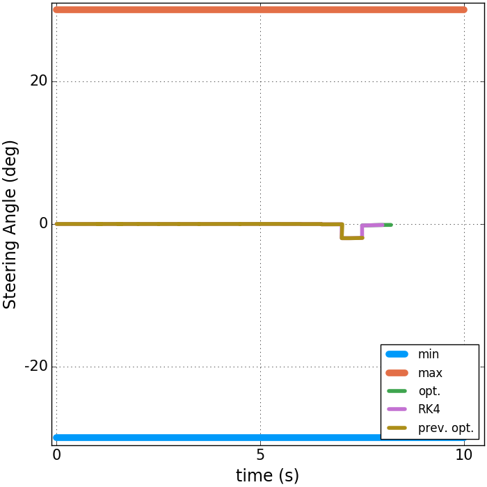
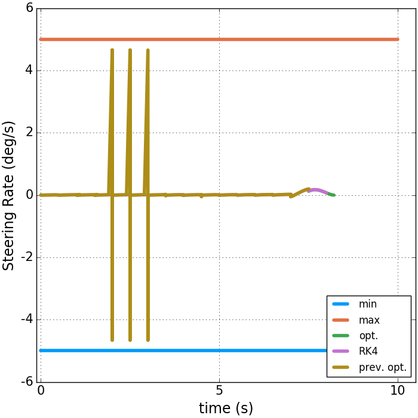
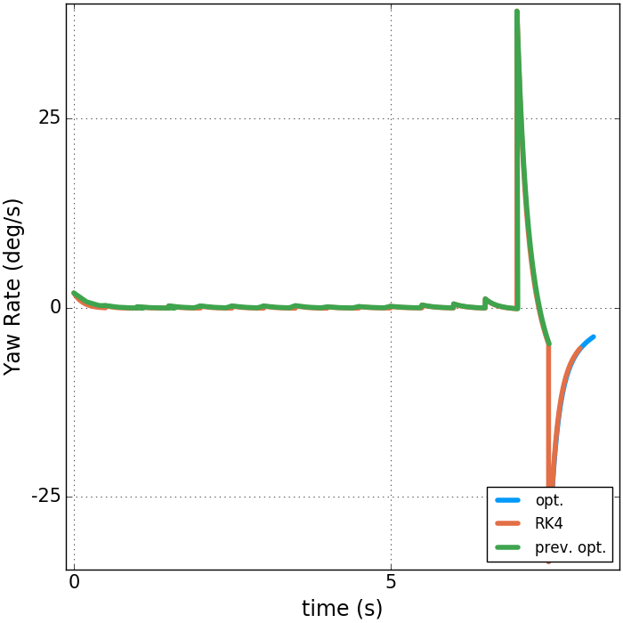
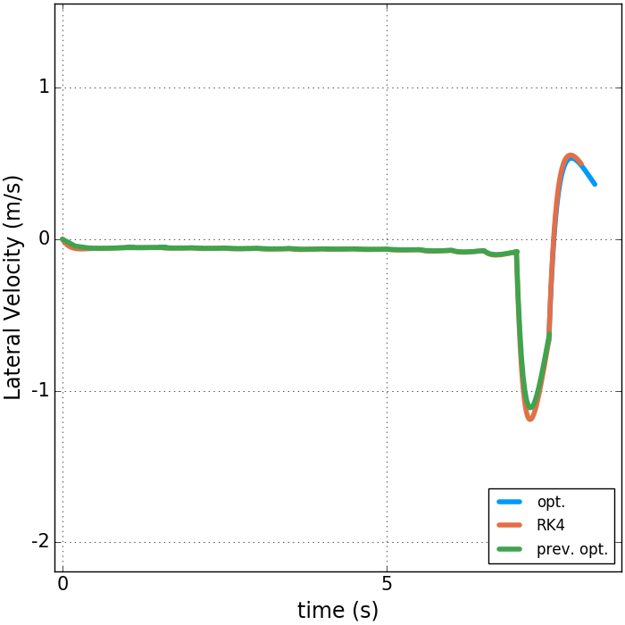
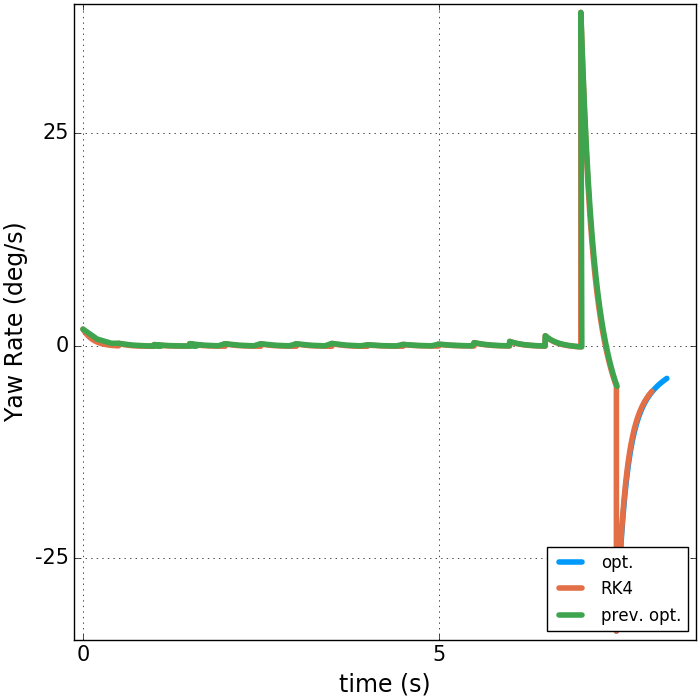
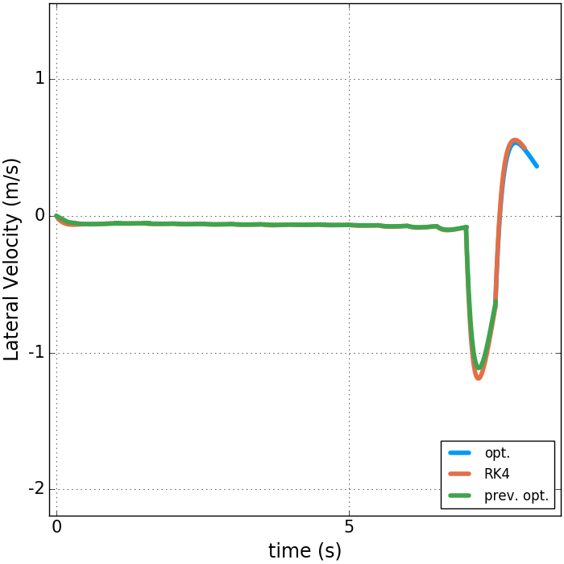
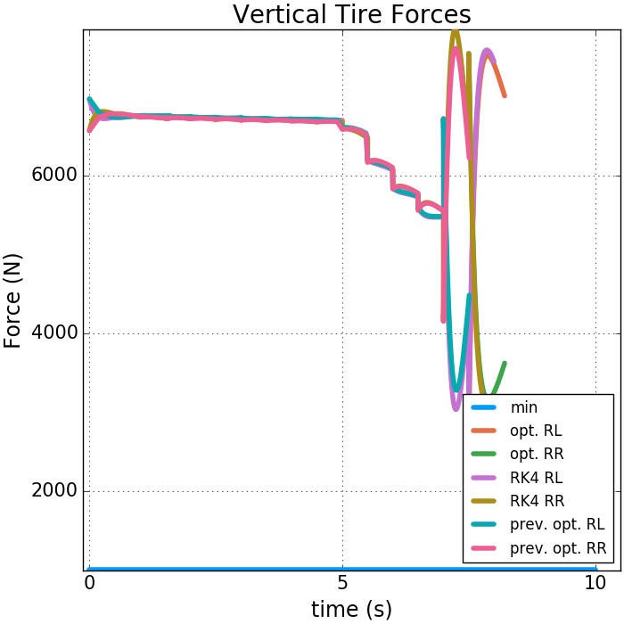

Expand Region Around Goal¶
Notes & Conclusions & Questions:
Depending on the speed, executing a 0.5 s duration of control signals will likely not land the vehicle on the goal
So, in this case, we add the threshold:
# The product of the execution time and the final speed requirement. ((X[end]-x_ref)^2 + (Y[end]-y_ref)^2)^0.5 < execution_horizon*u0_
In this example, we also add the constraint:
@NLconstraint(mdl, u[end] == u0_)
- So, we are making sure that the final speed is the same as the initial speed
- This is how Jiechao does it so that the vehicle is not going too fast
- Also, notice that adding this terminal constraint actually sped up the optimization!
- So, we are making sure that the final speed is the same as the initial speed
For a closer look at the end (last optimization) of the static plots, look below.
Taking a look at the states:

A closer look at the states and controls:


 



 




The tire forces are:
